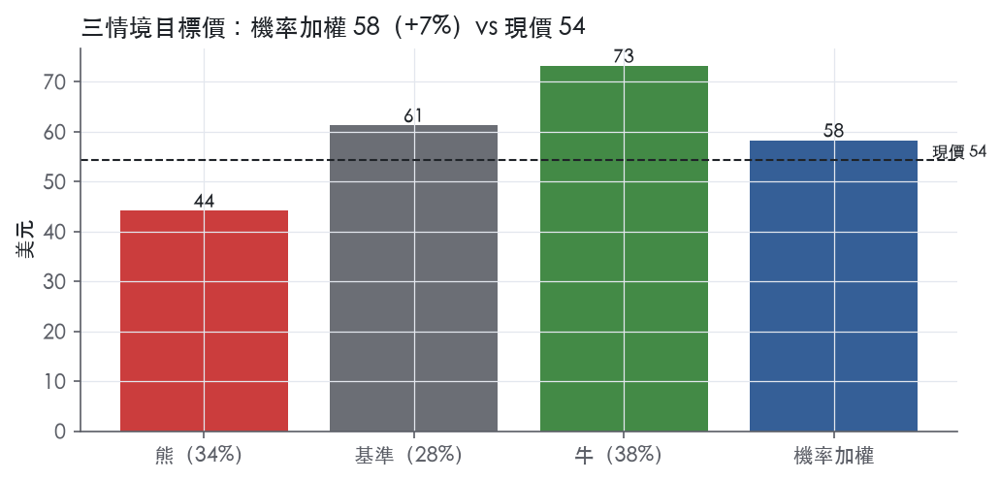
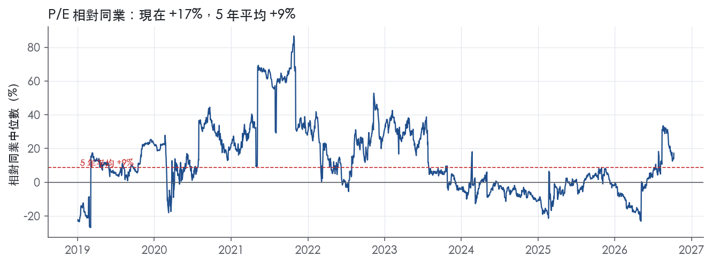
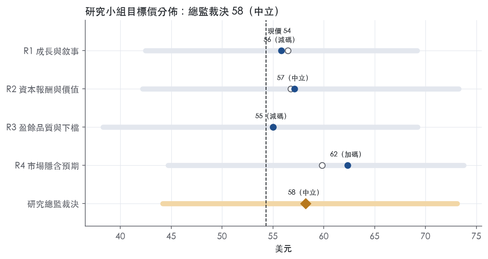
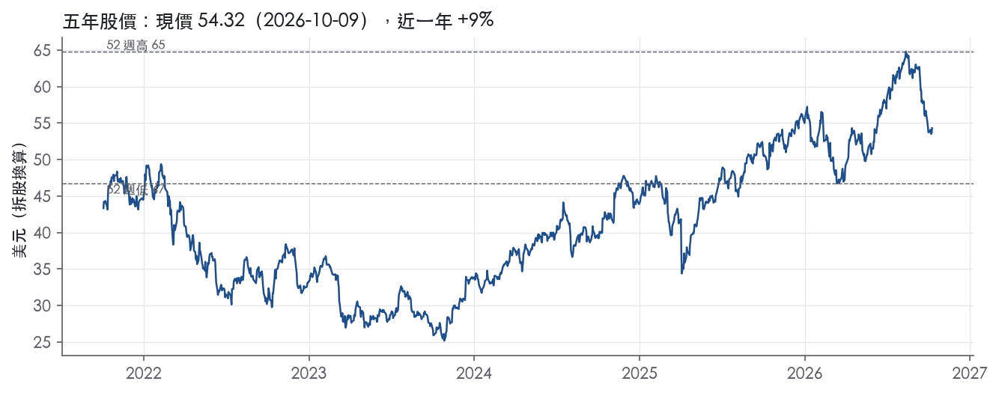

評等總表 › 金融 › BAC
維持1.7x不重評價，中性偏多｜評等 中立｜目標價 58
| 評等 | 中立 |
| 12 個月目標價 | 58 美元 |
| 現價 | 54.32 美元（2026-10-09） |
| 預期報酬 | 股價 +7.2%＋股息 2.1%＝總報酬 +9.3%；同業籃門檻 10.2%，超額 -0.9% |
| 估值方法 | P/TBV 1.7x，套在一年後的有形淨值 |
| 三情境 | 熊 44／基準 61／牛 73 |
| 研究流程 | 四位研究員兩輪辯論＋研究總監裁決 |
| 資料來源 | SEC EDGAR XBRL、Tiingo、FRED（全免費） |
維持1.7x不重評價，中性偏多（研究總監裁決，四位研究員兩輪辯論後）
評等 中立｜12 個月目標價 58 美元（總監三情境機率加權 60 與研究員中位數 56 各半）｜現價 54.32（2026-10-09）
預期報酬：股價 +7.2%＋股息 2.1%＝總報酬 +9.3%。同業籃門檻 10.2%，超額 -0.9%。
估值方法：P/TBV 1.7x，套在一年後的有形淨值。三情境：熊 44（34%）／基準 61（28%）／牛 73（38%）。
什麼會讓研究總監改變看法：3Q26程式口徑ROTCE跌破13.5%，或GAAP NII低於16.0B且管理層歸因降息，倍數降到1.5x轉空；4Q26與1Q27 ROTCE皆≥14.5%且銷售交易收入持平或年減，倍數升到1.8x轉多。
| 過去四季（實際，FY2026Q2） | 未來四季 | 第 5–8 季 | 第 9–12 季 | |
|---|---|---|---|---|
| 淨營收（B） | 121.1B | 125.9B | 134.1B | 142.2B |
| 淨營收成長 | 9.7% | 4.0% | 6.5% | 6.0% |
| 稅前利益率 | 36.2% | 35.0% | 34.5% | 34.5% |
| EPS（美元） | 4.36 | 5.33 | 5.87 | 6.53 |
| EPS 成長 | 27.5% | 22.3% | 10.1% | 11.2% |
| 每股股息（美元） | 1.12 | 1.12 | 1.12 | 1.12 |
| ROTCE | 14.6% | 15.1% | 15.1% | 15.2% |
| 每股有形淨值（美元） | 32.81 | 36.04 | 39.78 | 44.17 |
| P/E（現價） | 12.5x | 10.2x | 9.2x | 8.3x |
| P/TBV（現價） | 1.7x | 1.5x | 1.4x | 1.2x |
| 股息殖利率（現價） | 2.1% | 2.1% | 2.1% | 2.1% |
過去四季為申報數字；預測為研究總監的假設、程式計算。倍數與殖利率都用現價計算，用來看現價對應各期獲利的高低。
| 情境 | 機率（歷史） | 故事 | 未來四季營收成長 | 第 5–8 季稅前利益率 | 倍數 | 目標價 | 股價漲跌 |
|---|---|---|---|---|---|---|---|
| 熊 | 34%（35%） | 風險表第3條交易投行自70%/50%基期回落、第2條消金準備由回撥轉提列且提存突破1.6B、第4條2027-06 CCAR上調SCB壓回購；倍數由R1的1.25x調到3y P10的1.3x，觸發4Q26與2Q27財報 | 0.0% | 29.0% | 1.3x | 44 | -18.7% |
| 基準 | 28%（27%） | ROTCE退到14%附近就停，倍數維持現行，報酬來自有形淨值累積與股利 | 4.0% | 34.5% | 1.7x | 61 | 12.8% |
| 牛 | 38%（38%） | 投行管線兌現、銷售交易撐過2Q27基期、信用不升，ROTCE站穩15%以上，倍數到5y P90；y1由R2的9.5%調為8%與基準同做推導季修正 | 8.0% | 37.0% | 2.0x | 73 | 34.6% |
目標價由程式依研究總監的驅動與倍數計算；機率由研究總監給定。括號內是歷史頻率：把這檔股票過去十年 12 個月報酬的波動形狀，置中在基準情境，結果落在各情境附近的比例。

四位研究員用不同方法各自估值，回應研究總監的質疑後交出第二輪，最後由總監逐點裁決。各研究員的主張見第七章，裁決理由見第八章，完整論證見《研究底稿》。
| 立場（一輪→二輪） | 加權目標價（一輪→二輪） | 評等（一輪→二輪） | 第二輪倍數 | 熊～牛目標價 | |
|---|---|---|---|---|---|
| R1 成長與敘事 | 中性→中性 | 56→56 | 中立→減碼 | 1.6x | 42～69 |
| R2 資本報酬與價值 | 中性→中性 | 57→57 | 中立→中立 | 1.6x | 42～73 |
| R3 盈餘品質與下檔 | 中性→看空 | 55→55 | 減碼→減碼 | 1.6x | 38～69 |
| R4 市場隱含預期 | 看多→看多 | 60→62 | 中立→加碼 | 1.8x | 45～74 |
| 研究總監裁決 | 中性 | 58 | 中立 | 1.7x | 44～73 |
目標價由程式依各自的驅動與倍數計算；評等＝機率加權總報酬 − 同業籃門檻。
Bank of America 是美國最大商業銀行之一，透過四大業務分部——消費金融（Consumer Banking）、全球財富與投資管理（GWIM）、全球銀行（Global Banking）、全球市場（Global Markets）——同時服務個人存戶、高淨值客戶、企業與機構投資人。公司在 10-K 中把自己定位為一家受聯邦存款保險公司（FDIC）、聯準會等多重監管的銀行控股公司，母公司依賴銀行與非銀行子公司的股利與資金挹注來支付自身的股利與債務義務¹。截至 2Q26，公司平均存款餘額 2.02 兆美元、平均放款與租賃餘額 1.22 兆美元，兩者連續多季季增²。LTM（至 FY2026Q2）營收為 121.10B 美元，EBITDA 46.26B 美元，規模足以與摩根大通、花旗同列美國系統重要性銀行（G-SIB）。
四大分部收入結構各有側重，消金與財富管理貢獻穩定手續費與淨利息收入，市場與銀行業務則隨資本市場活動波動。消費金融（Consumer Banking）2Q26 營收 11,336M 美元，年增 5%，主要靠淨利息收入（NII）帶動²；業務涵蓋存款、信用卡、小企業放款與數位銀行，公司自稱「連續 20 個季度美國小企業放款第一」²。GWIM（全球財富與投資管理）2Q26 營收 6,871M 美元，年增 16%，資產管理費年增 19% 至 4,400M 美元，反映市場估值走高與穩健的資產管理淨流入（AUM flows）²；該分部客戶總餘額達 4,934.4B 美元²。Global Banking 2Q26 淨利 2.0B 美元，公司層級投資銀行手續費（不含自主承銷）2.1B 美元、年增 50%，平均存款 652B 美元、年增 8%²。Global Markets 2Q26 淨利 2.6B 美元，銷售與交易收入（含 DVA）7.1B 美元、年增 33%，其中股票交易收入年增 70% 至 3.6B 美元、固定收益/外匯/商品（FICC）收入年增 9% 至 3.5B 美元，公司稱這是「連續第 17 個季度年增」²。各分部佔整體營收比重與獨立損益細節 10-K 未揭露（僅新聞稿揭露季度數字），但從 2Q26 數字看，消金、財富管理為營收兩大支柱，市場業務則是淨利波動性最大的引擎。
BAC 以美國本土零售與企業客戶為主，但透過全球市場業務與機構客戶、外國政府、跨國企業往來，暴露在新興市場與地緣政治風險中¹。消金業務透過 3,530 家財務中心（金融中心）與數位通路服務個人與小企業客戶，截至 2Q26 擁有 3,853 萬消費者支票帳戶（38.7 million consumer checking accounts），其中 92% 為主要帳戶²；數位通路佔比持續上升，2Q26 有 44 億次（4.4 billion）數位登入、70% 銷售透過數位完成²。GWIM 透過 Merrill 與 Private Bank 兩大品牌服務高淨值與超高淨值客戶，2Q26 新增約 6,000 筆 50 萬美元以上資產門檻的淨新增關係（~6K net new $500K+ relationships）²。Global Banking 與 Global Markets 客戶則以企業、機構投資人、對沖基金、保險公司、中央結算對手方（CCP）為主，10-K 風險因子章節特別點名金融服務業的信用集中度，涵蓋券商、商業銀行、投行、保險公司、共同基金、對沖基金等交易對手¹。地區上公司業務全球佈局，但 Item 1 本身未提供各地區營收佔比的具體拆分，10-K 未揭露地區別營收結構。
過去四季（3Q25 至 2Q26）營收與獲利能力持續爬升，效率比逐季改善。FY2025Q3 營收 28.09B 美元、年增 10.8%，淨利 8.47B 美元，效率比（efficiency）61.7%。FY2025Q4 營收 31.18B 美元、年增 6.4%，淨利 7.53B 美元，效率比明顯下降至 55.9%，顯示當季費用控管或一次性項目有利。1Q26（FY2026Q1）營收 30.27B 美元、年增 7.2%，淨利 8.58B 美元，EPS 1.11 美元，公司稱「稅前前提撥收益（pretax,pre-provision income）11.7B 美元」、「營運槓桿 2.9%」³，CEO Brian Moynihan 表示「EPS 年增 25%」、「看到健康的客戶活動，包括穩健的消費支出與穩定的資產品質」³。2Q26（FY2026Q2）營收 31.56B 美元、年增 15.0%，淨利 9.07B 美元，EPS 1.21 美元，效率比改善至 59%，營運槓桿 6.6%²；CFO Alastair Borthwick 表示「我們的 3.5 兆美元資產負債表仍是實力來源，本季透過股利與回購向股東返還 80 億美元」²。公司對未來指引方面，2Q26 新聞稿並未給出具體次季財務指引，僅由 CEO 表示「近期投行手續費管線依然強勁，商業借款已回升」²。整體信用成本維持低位，2Q26 提存（provision for credit losses）1.4B 美元，較 2Q25 的 1.6B 美元下降，淨沖銷 1.4B 美元同步下滑²。
公司將成長歸因於多元化的業務模式與對客戶關係的深化，CEO 表示「每個業務分部都報出兩位數的淨利成長與強勁的股東權益報酬率」，「健康的經濟背景下，具韌性的消費者與企業正轉向 Bank of America 進行消費、借貸與投資」²。CFO 則強調資產負債表實力與資本配置紀律，「多年紀律執行的成果，本季各業務分部營收全面強勁成長」²。在風險因子章節，公司也將業務前景與聯準會貨幣政策、信用利差、監管資本要求緊密綁定，稱「若聯準會降息，通常會透過較低的淨利息收入導致營收下降」¹，顯示管理層自己也承認 NII 對利率環境高度敏感。整體來看，BAC 的成長引擎短期靠投行手續費（2Q26 年增 50%）與交易業務（銷售與交易收入年增 33%）的週期性反彈，中期則依賴財富管理 AUM 流入與消金存款/卡片消費的結構性增長。風險面在於，一旦聯準會降息路徑加速，NII 成長動能（2Q26 年增 9%）可能明顯放緩，而目前 trailing P/E 12.5x 位於近五年 47.3 百分位，估值並不便宜，對獲利不如預期的容錯空間有限。
BAC 評為窄護城河、趨勢穩定。低成本存款基礎與 G-SIB 規模形成的成本及監管門檻是真實優勢。但量化底稿顯示，過去十年 ROE 多數年份沒有跨過資本成本代理值，撐不起寬評級。我們有把握未來 5 年以上有形資本報酬維持在資本成本之上，沒有把握延伸到 10 年。
BAC 的優勢依強弱排序為成本優勢、效率規模、轉換成本；品牌只算輔助，不構成獨立來源。
成本優勢（存款資金）：公司自述流動性「is primarily supported by globally sourced deposits in our bank entities」¹。核心存款是銀行最便宜、最穩定的資金，全國性存款網絡讓 BAC 在資金端相對區域銀行有結構性成本優勢。淨利息收入／平均總資產最近 8 季維持在 1.7%–1.8%，在聯準會降息期間沒有出現壓縮，這與低成本存款的支撐一致。
效率規模／監管門檻：母公司「is required to submit a plan to the FDIC and Federal Reserve every two years describing its resolution strategy」¹。G-SIB 的處置計畫、資本與流動性要求合規成本極高，新進者很難同時在全國零售存款、企業銀行與全球市場複製這套體系。信用評等本身也是進入門檻，10-K 寫明評等「are also important to investors, clients or counterparties when we compete in certain markets and seek to engage in certain transactions, including over-the-counter (OTC) derivatives」¹。
轉換成本：支票主帳戶綁定薪轉、自動扣款、信用卡與房貸，客戶搬家的成本高；業務概況章引述的主要帳戶比例支持這個判斷。不過 10-K 也承認存款可能因「clients seeking higher yielding deposits or to an alternative financial institution perceived to be safer」而大規模移轉¹。這代表轉換成本只鎖得住交易型存款，鎖不住利率敏感型資金。
品牌：10-K 提到「high-profile brand」¹。但這段文字的語境是網路攻擊曝險，不是定價力的證據，因此不列為獨立優勢。
數字看得到穩定，看不到超額報酬；這是本評級最大的弱點，也是我們不給寬評級的原因。
穩定性方面，稅前利益率十年平均 32.7%、標準差 4.4%。最低值 22.2% 出現在 FY2020 提存高峰年（FY2020 營益率 22.2%）。ROE 標準差 1.6%，區間 6.7%–11.8%，以一家槓桿經營的銀行而言波動很小。
衝突在報酬水準：ROE 十年平均 9.5%，低於資本成本代理值 10.2%，差距 -0.8%；有資料的 9 年中只有 3 年高於代理值。最新 ROE 10.2% 也只是剛好與代理值打平。若只看這組數字，BAC 應評為「無」。
我們仍維持「窄」，理由有三：
上述理由只足以支撐 5 年的把握，不足以支撐 10 年。若未來兩年 ROE 回落並持續低於代理值，評級應下修為「無」。
最大威脅是存款特許權被利率競爭與非銀行支付形態削弱，也就是直接打在成本優勢上。
目標倍數應與大型同業持平、不給溢價，因為十年 ROE 平均沒有跨過資本成本代理值，溢價缺乏歷史根據。P/TBV 1.7x 已位於 5 年 72.0% 分位、高於 5 年中位數 1.5x，市場已經反映 ROTCE 的改善；P/E 12.5x 則位於 47.3% 分位（為 12.8x），貼近中位數。只有在 ROE 連續多年站穩代理值之上、且存款成本未被穩定幣或高息競爭侵蝕時，才考慮上修至溢價。
| 指標 | 最新 | 十年平均 | 標準差 | 最低 | 最高 |
|---|---|---|---|---|---|
| ROE | 10.2% | 9.5% | 1.6% | 6.7% | 11.8% |
| 稅前利益率 | 33.3% | 32.7% | 4.4% | 22.2% | 38.1% |
| 淨營收成長 | 6.8% | 3.5% | 4.1% | -6.3% | 8.2% |
程式計算。資本成本代理值（10 年債＋5%）：10.2%；ROE 十年平均減資本成本：-0.8%；ROE 有資料的 9 年中，高於資本成本 3 年。
BAC 的 LTM EPS 4.36建立在淨利息收入連續成長、信用成本穩定、資本回饋比率健康的基礎上，屬於可信的核心盈餘。但 SBC／營收已連續多年上升且超過綠燈門檻（黃燈），加上 FY2020→FY2021 淨利率跳動 15 個百分點的紅旗需要解釋，因此定為「中」而非「高」。銀行業的 CFO／FCF 無法用來驗證現金轉換，這點本身就限制了品質判斷的精確度。
銀行業的 CFO、FCF、EBITDA、淨負債在定義上不適用於評估現金是否支撐盈餘，資料包本身也註明「不要引用」。退而觀察可比的經營面指標：ROTCE 從 FY2024Q3 的 11.3% 一路上升到 FY2026Q2 的 15.8%，每股有形淨值從 29.34 升至 32.81，顯示帳上權益的增長與損益表盈餘方向一致。效率比從 FY2024Q3 的 65.0% 改善到 FY2026Q2 的 59.0%，且新聞稿也確認「Efficiency ratio improved 359 bps to 59%」²，成本控制的改善是真實的，不是會計操作的結果。放款／存款比持續走升，從 55.7% 到 60.1%，代表資產負債表在擴張但沒有失衡跡象。整體而言，銀行的「現金轉換」概念應改用資本比率與 ROTCE 替代驗證，而這兩項都支持盈餘品質，但無法完全排除交易帳與公允價值調整帶來的非現金損益波動。
新聞稿將 2Q26 淨利息收入由 GAAP 基礎的 16.0B 美元調整為 FTE（完全應稅等值）基礎的 16.2B 美元²，調整項是稅務等值化而非現金或盈餘品質問題，屬於銀行業常規處理。另一項非 GAAP 指標是稅前、提列前收益（pretax, pre-provision income）12.9B 美元 vs 稅前淨利 11.6B 美元（兩者差額即為當期提列的信用損失準備）²，這個調整把波動性較大的信用成本剝離出來看核心獲利能力，分析時應同時參考兩者而非只看調整後數字。ROTCE（17.0%）與每股有形淨值（29.37 美元）亦被新聞稿列為非 GAAP 衡量²，用意是扣除商譽與無形資產後看真實股東回報，這類調整在銀行股估值中屬合理且普遍使用，但估值研究員要清楚這會墊高報酬率數字，不能直接套用一般股本回報率的估值倍數基準。整體看，BAC 的非 GAAP 調整項規模不大、性質清楚（稅務等值化、信用成本拆分、有形權益），沒有發現常見於其他產業的大額重組費用或減損被排除在外的情況。
CET1 資本（標準法）202B 美元，季增 1.9B 美元²，CET1 比率 11.2%，「well above the regulatory minimum」²，資本緩衝充足。2Q26 單季回饋股東 8.0B 美元，其中 2.0B 美元為普通股股利、6.0B 美元為普通股回購²，回饋股東／淨利比率（股利＋回購）／淨利 LTM 為 73.9%，高於十年平均 54.5%，顯示公司在把資本結構導向股東而非留存擴張。稀釋股數年變動 LTM 為 -1.7%、近三年平均 -2.0%，持續淨減少，與大規模回購一致，綠燈。平均存款 2.02 萬億美元，季增逾 2%，連續 12 個季度季增長，平均放款 1.22 萬億美元，季增 8%，連續 9 個季度季增長²，資產負債表擴張速度快於淨值成長，但資本比率沒有惡化，說明擴張是靠內生資本支撐而非舉債堆疊。
SBC／營收黃燈（LTM 3.4% vs 十年平均 2.6%）：這是真實的、緩升的趨勢，不是一次性項目（量化底稿顯示 FY2016 至 FY2025 由 1.6% 升到 3.5%）。10-K 揭露 2025 年薪酬與福利費用占非利息費用 61%（42.3B 美元 vs 2024 年 40.2B 美元，占 60%）¹，顯示人才成本結構性上升，SBC 占比提升應視為實質人力成本增加而非會計口徑假警報，對淨利有真實侵蝕，但尚未達到紅燈門檻（>8.0%），影響有限。
淨利率 FY2020→FY2021 跳動 +15 個百分點：此為程式標出的紅旗，但資料包提供的 10-K 為 FY2025 年報，沒有包含 FY2020-2021 期間的 MD&A 原文可供直接核對具體一次性項目。從年度表觀察，FY2020 淨利率明顯受壓（EBITDA 占營收僅 24.4%量級下滑，淨利 17.89B 美元為近十年低點附近），FY2021 回升到淨利 31.98B 美元（年度表），期間已知銀行業在 2020-2021 普遍受疫情信用損失提列與隨後的巨額提列回沖（reserve release）影響，但本次提供的原文節錄沒有涵蓋該年度的具體揭露，故此紅旗無法用本次拿到的原文完全證實或排除，應標記為「需要向估值端說明：此為歷史窗口的波動，非目前 LTM 品質的組成部分」，不應套用到當前盈餘品質判斷。
稀釋股數年變動綠燈：無異常，持續回購減少股數，支持盈餘品質。
（股利＋回購）／淨利 LTM 73.9% 高於十年平均：綠燈但偏高，量化底稿定義「>100% 可能在舉債回饋」，BAC 目前 73.9% 未達此警戒線，加上 CET1 比率仍遠高於法定下限（11.2% vs 法定最低要求）²，可判斷為資本充裕下的正常股東回饋，非舉債撐回購。
估值應以 GAAP 淨利為主、FTE 與 PPNR 等非 GAAP 數字僅作為輔助理解信用成本與稅務結構的工具，不應作為估值基準盈餘。盈餘品質中等，SBC 占比上升代表人力成本結構性墊高，建議對遠期盈餘成長率做小幅下修而非對當期盈餘打折。槓桿方面，CET1 資本 202B 美元、比率 11.2% 遠高於法定最低要求，不構成限制倍數的理由，目前 trailing P/E 12.5x 落在五年分位 47.3%，估值倍數可維持區間中段，不需因財務體質另外施加折價。
| 項目 | LTM | 近三年 | 十年 | 燈號 | 規則 |
|---|---|---|---|---|---|
| SBC／營收 | 3.4% | 3.2% | 2.6% | 黃 | ≤3.0% 綠、>8.0% 紅 |
| 稀釋股數年變動 | -1.7% | -2.0% | -3.9% | 綠 | ≤0.0% 綠、>3.0% 紅 |
| （股利＋回購）／淨利 | 73.9% | 45.4% | 54.5% | 綠 | ≥50.0% 綠、<0.0% 紅 |
程式計算；燈號以 LTM（無則近三年平均）判定。銀行的現金流、淨負債、利息保障是本業，不列入。
| 指標 | FY2025Q1 | FY2025Q2 | FY2025Q3 | FY2025Q4 | FY2026Q1 | FY2026Q2 |
|---|---|---|---|---|---|---|
| 淨利息收入（B） | 14.4B | 14.7B | 15.2B | 15.8B | 15.7B | 16.0B |
| 淨利息收入／平均總資產 | 1.7% | 1.7% | 1.8% | 1.8% | 1.8% | 1.8% |
| 效率比 | 62.9% | 62.6% | 61.7% | 55.9% | 61.2% | 59.0% |
| 信用成本率 | — | — | — | — | — | — |
| 淨沖銷率 | 0.5% | 0.5% | 0.5% | 0.4% | 0.5% | 0.5% |
| 備抵／放款 | 1.2% | 1.2% | 1.1% | 1.1% | 1.1% | 1.1% |
| 放款／存款 | 55.8% | 57.0% | 58.2% | 58.7% | 59.1% | 60.1% |
| ROTCE | 12.5% | 12.6% | 14.5% | 14.6% | 14.9% | 15.8% |
| 每股有形淨值（美元） | 29.50 | 30.54 | 31.82 | 28.62 | 32.24 | 32.81 |
程式依 SEC XBRL 計算；季度流量年化。效率比＝非利息費用÷淨營收（越低越好）；信用成本率＝提列÷放款；淨沖銷率＝淨沖銷÷放款；淨利息收入÷平均總資產不是淨利差（NIM 的分母是生息資產，XBRL 沒有）。CET1 等監理資本比率不在 XBRL，見財報新聞稿。
| 風險 | 觸發指標（看什麼數字、在哪裡看） | 對 EPS 的影響方向與粗略幅度 | 未來 12 個月發生機率（高／中／低） | 出處 |
|---|---|---|---|---|
| 聯準會降息路徑加速，NII 成長放緩 | 每季 NII（FTE）年增率，見 8-K 財報首頁；2Q26 為 16.0B、年增 9%² | 方向：負；公司自述「聯準會降息通常透過較低淨利息收入導致營收下降」⁴，幅度：中（NII 占 LTM 營收逾一半） | 高 | ⁴² |
| 信用成本從低位反轉（消費/商業地產資產品質惡化） | 淨沖銷率（nco_rate）與信用成本率，見量化底稿；2Q26 淨沖銷 1.4B、提存 1.4B²，備抵／放款比 1.1% | 方向：負；提存若回升至 2Q25 的 1.6B 水準以上即為轉折訊號，幅度：中大（CECL 一次性回撥可逆轉） | 中 | ² |
| 交易與投行手續費的週期性反轉 | Global Markets 銷售與交易收入、投行手續費年增率，見每季 8-K；2Q26 銷售交易收入 7.1B（年增 33%）、投行手續費 2.1B（年增 50%）² | 方向：負（若反轉）；這兩項是本季 EPS 年增 34% 的主要貢獻者，一旦市場活動降溫，年增率可能由+33%／+50%轉負，幅度：大 | 中 | 8-K 財報新聞稿（2026-07-14） |
| 監管資本要求上升（SCB／G-SIB 附加）限制資本回饋 | 年度 CCAR 結果公布的 SCB 數字、G-SIB 附加比率；目前 SCB 2.5%、G-SIB 附加 3.0%⁴ | 方向：負；SCB 或 G-SIB 附加上調會壓縮股利與回購空間，不直接打 EPS 但影響每股回饋與 ROTCE，幅度：中 | 中 | 10-K 年報 FY2025 Item 1A（風險因素） |
| 信用評等下調觸發附加擔保與融資成本上升 | 主要信評機構（S&P/Moody's/Fitch）評等動作公告；10-K 明示評等下調可能導致附加擔保要求或交易對手終止合約⁴ | 方向：負；短期融資成本上升、交易收入受壓，幅度：原文未給數字，只能判「中」 | 低 | 10-K 年報 FY2025 Item 1A（風險因素） |
利率風險是最確定會動到盈餘的一條，因為它直接寫在 10-K 的 Market 風險段落：「若聯準會改變貨幣政策導致利率下降，通常會透過較低的淨利息收入造成營收下降」⁴。2Q26 NII 年增 9% 至 16.0B 美元（FTE 16.2B 美元），公司自己也承認這個增速部分被「較低利率的影響」抵銷²，顯示降息越快，這個正貢獻越快消失。監測方式很直接：每季財報首頁的 NII 數字與年增率，一旦轉負或增速驟降至個位數以下，就是訊號。
信用成本目前處於歷史低位（淨沖銷率、備抵／放款比均維持在 0.5%、1.1% 附近，見量化底稿），這代表向上修正的空間遠大於向下。10-K 明確點名消費房貸與信用卡、商業地產（尤其辦公樓）為集中度風險⁴，而公司在 2Q26 甚至出現「淨備抵回撥（net reserve release）2,300 萬美元」²，這種回撥若反轉成回補，會直接吃掉 EPS。觀察指標是每季提存（provision）與淨沖銷金額是否重新向上突破近四季區間。
交易與投行手續費的高成長（股票交易收入年增 70%、FICC 年增 9%、投行手續費年增 50%）是本季 EPS 大幅優於去年同期的主要驅動²，但這類收入本質上是週期性的、對市場波動與資本市場活動高度敏感，10-K 也警示「市場波動加劇可能增加我們的市場風險」⁴。這條風險的特性是：漲得快、跌得也快，且沒有合約保證延續性，需每季緊盯 Global Markets 與 Global Banking 分部營收年增率是否由正轉負。
監管資本要求屬於政策性風險，不是「總體經濟轉弱」這種不可監測的敘述，而是有具體、公開的數字可追——每年 CCAR 結果公布後的壓力資本緩衝（SCB）與 G-SIB 附加比率。公司目前 SCB 2.5%、G-SIB 附加 3.0%，若下次 CCAR 結果使 SCB 上調，資本回饋（股利與回購）空間會被壓縮，雖不直接打 EPS，但會壓低每股可分配資本與 ROTCE。
信用評等風險機率較低但不可忽略，10-K 指出評等下調可能觸發 OTC 衍生品合約的附加擔保要求，或讓交易對手終止合約，同時推高短期融資成本。目前沒有評等機構發出負向展望的公開訊號，所以列為低機率，但監測方式明確：追蹤三大信評機構對 BAC 的評等動作公告。
現價 54.32 對應 trailing（過去四季）P/E 12.5x、P/TBV 1.7x（ROTCE 14.6%）、股息殖利率 2.1%。主要估值倍數 P/TBV 現在 1.7x，落在5 年區間第 72 百分位（P10／P50／P90 = 1.1x／1.5x／2.0x）。
把程式的機械基準預測放到現價下，市場付的前瞻倍數是：P/TBV（未來四季） 1.5x、P/E（未來四季） 9.4x、P/TBV（第 5–8 季） 1.3x、P/E（第 5–8 季） 8.4x。
| 倍數 | 現在 | 5 年 P10 | 5 年 P50 | 5 年 P90 | 現在分位 | 全期 P50 |
|---|---|---|---|---|---|---|
| P/E | 12.5x | 8.6x | 12.8x | 15.1x | 47.3% | 12.9x |
| P/TBV | 1.7x | 1.1x | 1.5x | 2.0x | 72.0% | 1.5x |
trailing 倍數（股價 ÷ 過去四季）；分位以每個交易日計算。
同業籃：C, COF, BANC, CAC, CARE, ASRV（SIC 6021 同業 21 家中，CY2025 營收最接近的 6 家）。評等門檻 10.2%：同業「倍數不變下持有一年」的隱含報酬中位數（＝ 盈餘殖利率 ×(1＋g)＋g，g 為 5 年營收年複合成長並夾在 −2%～8%），每家夾在 0～15%、P/E 低於 5 倍視為資料可疑而排除，中位數再限制在 10 年債到 10 年債＋5% 之間（同業原始中位數 15.0%）；排除：BANC（隱含報酬算不出來）。
| 代號 | 市值 | 5 年營收 CAGR | ROTCE | P/E | 5 年 P/E 中位數 | P/TBV | 隱含報酬 |
|---|---|---|---|---|---|---|---|
| BAC | 381.2B | 5.7% | 14.6% | 12.5x | 12.8x | 1.7x | 14.2% |
| C | 242.8B | 2.5% | 7.8% | 18.3x | 11.5x | 1.4x | 8.1% |
| COF | 122.2B | 13.4% | 17.0% | 11.8x | 10.8x | 2.0x | 17.1% |
| BANC | 2.7B | 243.4% | -2.4% | — | — | 1.0x | — |
| CAC | 0.9B | 8.5% | 15.4% | 10.6x | 10.7x | 1.6x | 18.2% |
| CARE | 0.7B | 2.5% | 23.9% | 5.2x | 12.8x | 1.2x | 22.2% |
| ASRV | 0.1B | 2.7% | 7.8% | 8.6x | 10.9x | 0.7x | 14.6% |
| 同業中位數 | 5.6% | 11.6% | 10.6x | 10.9x | 1.3x | 10.2% |
全部 trailing，程式以各公司 SEC XBRL 與 Tiingo 行情計算；第一列為本檔。
P/E 相對同業中位數：現在 17.2%，過去 1 年平均 1.5%、3 年 -2.0%、5 年 8.6%。

程式的機械基準（成長率從過去四季年增率三年收斂到 6%、利潤率持平）用 P/TBV 5 年 P50（trailing） 估值得到 56（3.6%），用現行倍數得到 63。這兩個數字只是參考點，不是本報告的目標價；研究員對這個定價的回應在第七章。
下表是每位研究員第一輪（各自獨立）與第二輪（回應研究總監的質疑後）的結果。目標價全由程式依各自的假設計算。
| 立場（一輪→二輪） | 加權目標價（一輪→二輪） | 評等（一輪→二輪） | 第二輪倍數 | 熊～牛目標價 | |
|---|---|---|---|---|---|
| R1 成長與敘事 | 中性→中性 | 56→56 | 中立→減碼 | 1.6x | 42～69 |
| R2 資本報酬與價值 | 中性→中性 | 57→57 | 中立→中立 | 1.6x | 42～73 |
| R3 盈餘品質與下檔 | 中性→看空 | 55→55 | 減碼→減碼 | 1.6x | 38～69 |
| R4 市場隱含預期 | 看多→看多 | 60→62 | 中立→加碼 | 1.8x | 45～74 |
| 研究總監裁決 | 中性 | 58 | 中立 | 1.7x | 44～73 |
目標價由程式依各自的驅動與倍數計算；評等＝機率加權總報酬 − 同業籃門檻。
分歧度：第一輪 加權目標價 55～60（區間＝現價的 9%）· 倍數 1.6～1.7x · 立場 中性×3、看多×1；第二輪 加權目標價 55～62（區間＝現價的 14%）· 倍數 1.6～1.8x · 立場 中性×2、看空×1、看多×1。

| 研究員 | 第二輪主張 | 堅持的理由 |
|---|---|---|
| R1 成長與敘事 | 中性，目標1.6x，介於五年中位數1.5x與現行倍數之間。 | 交易與投行收入明年回吐，第二年營收成長只有3.5%。 |
| R2 資本報酬與價值 | 中性，目標1.6x，可持續ROTCE假設為13.5%。 | 過去一年市場付的1.7x出現在ROTCE高點期，不能當作下限。 |
| R3 盈餘品質與下檔 | 看淡，目標1.6x；盈餘是真的，但含息總報酬3.4%低於門檻。 | 熊情境底部1.15x不改，消金已連兩季回撥準備，信用成本只會上升。 |
| R4 市場隱含預期 | 偏多，目標1.8x，取過去一年市場付的中位數。 | 市場低估ROTCE的持久性，效率改善與營運槓桿不靠交易收入。 |
每位研究員的逐條回應與完整論證見《研究底稿》（BAC_研究底稿_2026-10-12.docx）。
| 分歧點 | R1 成長 | R2 價值 | R3 品質 | R4 預期 | 什麼資料會分出勝負 |
|---|---|---|---|---|---|
| 目標 P/TBV 與可持續 ROTCE（multiple） | 1.6x：介於 5y P50 1.5x 與現行 1.7x，窄護城河不給溢價 | 1.6x：可持續 ROTCE 13.5%（假設）；1y P10 1.7x 在高點年形成，不算下限 | 1.6x：偏向程式 12 季均值的 1.4x；5y P90 受 Q4 TBV 口徑墊高 | 1.8x：1y P50，ROTCE 14.5–15.8% 那一年市場付的中位數 | 、FY2026Q4（2026-10、2027-01）配同期銷售交易年增：ROTCE ≥14.5% 且 S&T 持平→R4；≤13.5%→R2 |
| NTM 營收成長與推導季（rev_growth_y1） | 6%：結構中個位數、週期持平，但把 2Q27 基期放到 y2 | 6%：未修正起點水準 | 真實 6%、程式填 4%：修正推導季墊高的起點 | 8%：未修正起點 | 3Q26 財報營收年增（2026-10 中）：≥10%→R4、5–8%→R1/R3；程式以公司口徑起點重跑 |
| 回購力道（share_change_pct） | −4.0% | −4.7%（基準）：2Q26 回購 6.0B 後 CET1 仍季增 1.9B | −3.5%：CET1 連兩季 11.2%、近三年股數年均 −2.0% | −4.0%；牛 −5.0% | 3Q26 8-K 的回購金額與 CET1 比率；2027-06 CCAR 的 SCB |
| 牛／熊機率方向（scenario_prob） | 35／27／38，熊＞牛 | 30／36／34，熊＞牛 | 33／35／32 | 40／30／30，牛＞熊 | 歷史分布（上漲 64%；四人程式對照牛區 32–42%、熊區 32–37%）；偏離要有公司特有事件與日期 |
1. 倍數——own，1.7x。 核心是可持續 ROTCE。程式用近 12 季平均 12.6% 算出 1.4x，但那 12 季含效率比 65.0%、ROTCE 11.3%的時期；之後效率比降到 59.0%，GAAP NII 由 2Q25 的 14.7B 升到 2Q26 的 16.0B，分行由 3,664 減到 3,530，七成銷售數位化²——這些不靠交易收入，所以可持續水準高於 12.6%，R2、R3 偏向低端的證據不夠。但 15.8%那一季 Global Markets 淨利 2.6B、Global Banking 2.0B，背後是銷售交易年增 33%、股票交易年增 70%、投行手續費年增 50%²，是週期增量。扣掉它，我把可持續 ROTCE 定在 14%（假設、程式口徑），請程式代入合理 P/TBV 公式核對是否落在 1.7x。1.7x 另有三個錨：等於現行 trailing 倍數；等於 1y P10——R2 說 1y 帶在高點年形成，只能否定把 1y P50 當中位數，否定不了 P10 當那個 ROTCE 區間的下限；位於 5y 帶 72.0% 分位，對應 ROTCE 結構性高於五年平均、但不在永久高點。程式檢查表顯示 1.6x 相對市場持平倍數 −7%、1.8x 為 +5%，1.7x 就是市場持平倍數：我的報酬來自有形淨值累積與股利，不押重評價。不選 R4 的 1.8x：1y P50 是股價上到 64.81 那一年的中位數，要它成立，ROTCE 得在 2Q27 對上股票交易年增 70% 的基期後仍 ≥14.5%，那是牛情境要證明的事。不選 1.6x：三人都只給「高於 5y P50、低於現行」的區間判斷，沒有人提出 ROTCE 會跌破 13.5% 的證據；R3 自己的基準故事（NII 穩增、交易回落、信用小幅回升）就對應 14% 附近。護城河章「不給同業溢價」我接受，但同業籃無 P/TBV，P/E 溢價 17.2% 的對照組含 BANC、CAC、CARE、ASRV 四家小銀行，可比者只剩 C（18.3x，盈餘受壓）與 COF（11.8x），不足以判定溢價；trailing P/E 12.5x 在自家 5y 帶 47.3% 分位，1.7x 不構成溢價。第二輪無人再用 10 年債壓倍數（R4 第一輪 E6 已撤）。
2. NTM 營收——quality（R3），程式填 4%、真實 6%。 推導季 FY2025Q4 營收 31.18B、營益率 39.9%、效率比 55.9%，對公司公布的 4Q25 營收 $28.4B、稅前 $9.6B【R1、R3 引 8-K 2026-04-15】、效率比 61%²：LTM 121.10B的水準與 36.2% 的比率都被墊高。四人都看到，只有 R3 把水準修正與比率修正分列並給出程式等效值；R1、R2 填 6% 是讓墊高的起點再長 6%，R4 的 8% 把基期效應放大。真實 6% 有 R1 的拆分支撐（NII +6%、資產管理費 +10%、消金 +5%、投行 +5%、交易 0%，皆假設），兩人一致。R1 的 y2 3.5% 不採：2Q27 在 NTM（FY2026Q3–FY2027Q2）之內，股票交易年增 70% 的基期效應落在 y1，不在 Q5–Q8——R3 第二輪自己修正了這個年份錯置，所以 y2、y3 採 R3 的 6.5%、6.0%；它們不進 未來四季期末有形淨值，只影響交叉驗證。請程式修正兩個口徑：推導季；以及每股 TBV 32.81介於公司每股帳面 $39.34 與每股 TBV $29.37 之間²的扣除項差異（R3 判斷少扣特別股或部分無形資產）。帶與 TBV 同口徑，不影響本次倍數。
3. 回購——value（R2），−4.7%。 R3 引近三年股數年均 −2.0%（盈餘品質章）與 CET1 比率連兩季 11.2%，主張回購無法加速。但基準的 −4.7% 不是加速，是 LTM 速度：2Q26 單季回購 6.0B、連股利回饋 8.0B，同期 CET1 資本仍季增 1.9B²，由當期盈餘支應。年度表 FY2024→FY2025 稀釋股數 7.94B→7.68B（FY2025）是年均口徑，落後於上升中的季度速度。R3 的證據能排除的是加速：CET1 比率持平、放款年增 8% 推高風險資產，所以牛情境不採 R4 的 −5.0%。SCB 上調是 2027 年 6 月 CCAR 的事件，放熊情境（−1.5%），不放基準。
4. 機率——own，38／28／34，向歷史靠。 R1、R2 熊＞牛的理由是交易在高點、信用在低點，這是週期位置的描述；2015–2025 的分布含 2018、2020、2022 三次回檔，已把週期位置的後果算進去（上漲 64%、中位數 +17%、置中後 P25 −22%／P75 +18%）。四人第二輪的程式對照（R1 37／37、R2 32／36、R3 36／32、R4 42／33）牛區都不低於熊區或只差 4pp，沒有人提出使熊頻率高於歷史的公司特有事件；本部 22 份報告全部熊＞牛，這次不延續。R4 方向對，但他把熊壓到 30% 的證據（提存 1.4B、消金回撥、CET1 11.2%）說的是信用現在好，撐的是基準情境，不是熊不會來。我的小幅牛傾斜有三個公司特有依據：3Q26 財報在 10 月中，CEO 在 2Q26 已說「投行管線強勁、商業借款回升」²；銷售交易連 17 季年增；現價 54.32低於 52 週高點 64.81。
漂移。 四人第二輪都離其他人中位數而去（靠攏比例全為負），接受的意見全附證據，無可退回的漂移。兩處修正方向對、位置錯，已在上文處理：R1 把 2Q27 基期放到 y2；R4 以當期信用證據降熊機率。
| 驅動 | 基準 | 裁決 | 來源與理由 |
|---|---|---|---|
| rev_growth_y1 | 8.5% | 4.0% | R3；程式等效值，修正推導季墊高的起點，公司口徑約 6% |
| rev_growth_y2／y3 | 7.2%／6.0% | 6.5%／6.0% | R3；2Q27 基期效應在 NTM，不在 Q5–Q8 |
| op_margin_y1 | 36.2% | 35.0% | R2／R3；公布季 33.7%、34.4%、36.6%（／FY2026Q1／FY2026Q2），36.6% 含交易高點。R1 的 34.5% 假設營運槓桿歸零，與 CEO 說的管線強勁不符；R4 的 35.5% 要再擴 1pp，先讓 3Q26 證明 |
| op_margin_y2／y3 | 36.2% | 34.5%／34.5% | R2；信用正常化放 y2、y3，與可持續 ROTCE 低於 NTM 的裁決一致 |
| share_change_pct | −4.7% | −4.7% | R2，基準不動 |
| tax_rate | 19.1% | 19.1% | 基準；R3、R4 的 20% 無新證據 |
目標倍數 1.7x P/TBV，套在 NTM 期末每股有形淨值（horizon＝ntm，與自家 trailing 帶同為程式 dv.tbv_ps 口徑）。錨：合理 P/TBV 代入可持續 ROTCE 14%（假設）；交叉：現行 1.7x、1y P10 1.7x、5y 72.0% 分位；相對同業持平、不給溢價。
| 情境 | 機率 | 取自 | 驅動（相對基準） | 倍數 | 故事 |
|---|---|---|---|---|---|
| 牛 | 38% | R2 | y1 8%（R2 原 9.5%，與基準同做推導季修正）、y2 7.5%；營益率 37／37／36.5% | 2.0x（5y P90＝1y P90） | 投行管線兌現、銷售交易撐過 2Q27 基期、信用不升，ROTCE 站穩 15% 以上，市場把 1y 帶中位數以上永續化 |
| 基準 | 28% | 總監 | 上表 | 1.7x | ROTCE 退到 14% 附近就停，有形淨值累積與股利構成報酬 |
| 熊 | 34% | R1，倍數 1.25x→1.3x | y1 0%、y2 1%、y3 3%；營益率 30／29／31%；股數 −1.5% | 1.3x（3y P10） | 風險表第 3 條：交易、投行自 70%／50% 基期回落；第 2 條：消金準備由回撥 $23M 轉提列、單季提存突破 2Q25 的 1.6B；第 4 條：2027-06 CCAR 將 SCB 上調至 2.5% 以上、回購縮手。觸發：4Q26（2027-01）、2Q27（2027-07）財報 |
機率從歷史表查：牛情境一半距離約在 +10%（歷史 37%）；熊情境一半距離落在 −10% 與 −20% 之間（歷史 40% 與 29%），取 34%；基準取餘數。牛高於熊 4pp，與歷史方向一致、偏離不到 10pp，公司特有依據見第 4 點。熊倍數由 R1 的 1.25x 微調到 1.3x，因為 1.25x 沒有帶上的錨，1.3x 是 3y P10，即 ROTCE 11.3–12.5% 時期市場付的底部。
市場付 trailing 1.7x，與我們的目標倍數相同，所以差距不在倍數水準，而在倍數背後的盈餘路徑：1.7x 在 1y 帶 21.8% 分位、5y 帶 72.0% 分位，市場隱含的是 ROTCE 由 15.8% 退向 12 季均值 12.6%（基準模型 1.4x 的對應點）；我們認為退到 14% 就停（假設），差額來自效率比與 NII 這兩個不依賴交易收入的結構項。基準模型的市場隱含 P/E 9.4x 與 EPS 5.76 含推導季墊高，不能直接讀。立場中性偏多與評等中立一致：點估 1.7x 乘修正後 TBV 的含息總報酬高於 10.2% 門檻（門檻等於基準模型的股東要求報酬；同業籃小銀行失真，但換成資本成本結論相同），機率加權後熊情境錨在 3y P10 與風險表第 2–4 條，超額縮到中立帶內。轉多的條件是 3Q26 證明 ROTCE 不退。
現價 54.32 → 點估目標價 61 → 機率加權目標價 60 → 目標價 58，差距拆成五段：成長順延 +8 美元（市場現行倍數 1.7x 一年後持平、獲利照機械基準）；倍數差 -1 美元（總監倍數 1.7x vs 市場持平倍數 1.7x，同一機械基準預測）；盈餘差 -1 美元（總監預測的未來四季有形淨值 241.1B vs 機械基準 243.9B，同一倍數）；情境不對稱 -1 美元（機率加權減點估）；研究小組平均 -2 美元（總監機率加權 60 與研究員第二輪中位數 56 各半）。各段相加等於目標價減現價。本階段未接賣方共識，差距以市場隱含預期為對照。
| 驅動 | 機械基準 | 研究總監 | 差異 |
|---|---|---|---|
| 未來四季營收成長 | 8.5% | 4.0% | -4.5 pp |
| 第 5–8 季營收成長 | 7.2% | 6.5% | -0.7 pp |
| 第 9–12 季營收成長 | 6.0% | 6.0% | ＝ |
| 未來四季稅前利益率 | 36.2% | 35.0% | -1.2 pp |
| 第 5–8 季稅前利益率 | 36.2% | 34.5% | -1.7 pp |
| 第 9–12 季稅前利益率 | 36.2% | 34.5% | -1.7 pp |
| 稅率 | 19.1% | 19.1% | ＝ |
| 股數年變動 | -4.7% | -4.7% | ＝ |
研究總監只寫偏移，未寫的沿用基準。銀行的 D&A、資本支出、SBC 不影響估值，不列。
| 期 | 淨營收 | 成長 | 稅前利益率 | 稅前利益 | 淨利 | EPS | 每股股息 | 期末有形淨值 | 每股有形淨值 |
|---|---|---|---|---|---|---|---|---|---|
| 未來四季 | 125.9B | 4.0% | 35.0% | 44.1B | 35.7B | 5.33 | 1.12 | 241.1B | 36.04 |
| 第 5–8 季 | 134.1B | 6.5% | 34.5% | 46.3B | 37.5B | 5.87 | 1.12 | 253.7B | 39.78 |
| 第 9–12 季 | 142.2B | 6.0% | 34.5% | 49.1B | 39.7B | 6.53 | 1.12 | 268.5B | 44.17 |
程式依上表的驅動計算；季度用最近四季季節性分攤；不含營運資金變動。
估值方法：P/TBV 1.7x，套在一年後的有形淨值。研究總監目標倍數的錨：合理P/TBV代入可持續ROTCE 14%（假設、程式口徑，請程式核對）；等於現行trailing 1.7x與1y P10，5y帶72.0%分位；trailing帶配ntm TBV同為dv.tbv_ps口徑；相對同業持平不給溢價。
計算：有形淨值（未來四季期末） 241.1B × 1.7x＝權益價值 409.9B，除以未來四季的股數 → 點估目標價 61（12.8%）；隱含 P/E（未來四季）11.5x、P/E（第 5–8 季）10.4x。
總監三情境機率加權目標價 60，研究員第二輪中位數 56，兩者各半＝目標價 58；預期報酬 股價 +7.2%＋股息 2.1%＝總報酬 +9.3%；減評等門檻 10.2%（同業籃隱含報酬中位數（C, COF, BANC, CAC, CARE, ASRV））＝超額報酬 -0.9% → 評等 中立（超額 >+15% 買進、+5～+15% 加碼、±5% 中立、−5～−15% 減碼、<−15% 賣出）。同一份資料重開研究小組，超額約有正負四個百分點的雜訊（一個標準差，二十檔實測）；以此估計，評等落在其他級距的機率約二成。
| 情境 | 機率 | 未來四季成長 | 第 5–8 季成長 | 第 5–8 季稅前利益率 | 有形淨值（未來四季期末） | 倍數 | 目標價 |
|---|---|---|---|---|---|---|---|
| 熊 | 34% | 0.0% | 1.0% | 29.0% | 234.8B | 1.3x | 44 |
| 基準 | 28% | 4.0% | 6.5% | 34.5% | 241.1B | 1.7x | 61 |
| 牛 | 38% | 8.0% | 7.5% | 37.0% | 244.6B | 2.0x | 73 |
| 主張 | 驗證日 | 看哪個數字 | 門檻 |
|---|---|---|---|
| 降息未扭轉NII，3Q26 GAAP淨利息收入不低於2Q26 | 2026-10-31 | 3Q26 GAAP net interest income（8-K首頁） | >= 16.0B |
| 可持續ROTCE支撐1.7x，4Q26與1Q27程式口徑ROTCE皆不低於14% | 2027-04-30 | 、 | >= 14.0% |
| 信用正常化漸進，3Q26–2Q27每季提存不超過2Q25水準 | 2027-07-31 | Provision for credit losses 單季（8-K） | <= 1.6B |
| 回購速度可維持，2027年CCAR的SCB不上調且3Q26–1Q27每季回購不低於5.0B | 2027-06-30 | SCB（CCAR結果）與單季普通股回購金額（8-K） | SCB <= 2.5% 且回購 >= 5.0B（假設門檻） |
到期由程式結算（第 5 階段帳本）。
內文上標數字對應下列公司申報文件；未標上標的分析與判斷，是研究小組的觀點。報告中的每個數字都經程式逐一核對資料包或原文。
| 期 | 淨營收 | 成長 | 稅前利益率 | 淨利 | EPS | 每股股息 | ROE | ROTCE | 每股有形淨值 | 效率比 | 稀釋股數 |
|---|---|---|---|---|---|---|---|---|---|---|---|
| FY2016 | 83.7B | — | 29.9% | 17.8B | 1.49 | 0.25 | — | 8.3% | 19.33 | 65.8% | 11.0B |
| FY2017 | 87.1B | 4.1% | 33.5% | 18.2B | 1.56 | 0.39 | 6.8% | 8.5% | 19.04 | 62.6% | 10.8B |
| FY2018 | 91.0B | 4.5% | 38.0% | 28.1B | 2.61 | 0.54 | 10.6% | 15.5% | 17.81 | 58.4% | 10.2B |
| FY2019 | 91.2B | 0.2% | 35.9% | 27.4B | 2.75 | 0.66 | 10.3% | 15.2% | 19.32 | 60.2% | 9.4B |
| FY2020 | 85.5B | -6.3% | 22.2% | 17.9B | 1.87 | 0.72 | 6.7% | 9.3% | 20.49 | 64.6% | 8.8B |
| FY2021 | 89.1B | 4.2% | 38.1% | 32.0B | 3.57 | 0.78 | 11.8% | 17.5% | 21.56 | 67.0% | 8.6B |
| FY2022 | 95.0B | 6.6% | 32.6% | 27.5B | 3.19 | 0.86 | 10.1% | 15.0% | 21.72 | 64.7% | 8.2B |
| FY2023 | 102.8B | 8.2% | 31.7% | 26.3B | 3.05 | 0.92 | 9.3% | 12.9% | 24.16 | 64.1% | 8.1B |
| FY2024 | 105.9B | 3.0% | 31.4% | 27.0B | 3.19 | 1.00 | 9.2% | 12.7% | 26.25 | 63.1% | 7.9B |
| FY2025 | 113.1B | 6.8% | 33.3% | 30.5B | 3.81 | 1.08 | 10.2% | 14.8% | 28.62 | 61.7% | 7.7B |
SEC XBRL；每股數據已依拆股換算到現在股數基準。銀行的營業利益＝稅前利益；CFO、FCF、淨負債對銀行沒有意義，不列。
| 期 | 期末 | 推導 | 淨營收 | 稅前利益率 | 淨利 | EPS | 淨利息收入 | 效率比 | 信用成本率 | 淨沖銷率 | ROTCE |
|---|---|---|---|---|---|---|---|---|---|---|---|
| FY2023Q3 | 2023-09-30 | 25.2B | 32.2% | 7.8B | 0.90 | 14.4B | 62.9% | — | 0.4% | 13.5% | |
| FY2023Q4 | 2023-12-31 | Q4 | 26.1B | 28.0% | 2.9B | 0.36 | 13.9B | 67.8% | — | 0.5% | 5.5% |
| FY2024Q1 | 2024-03-31 | 25.8B | 28.1% | 6.7B | 0.76 | 14.0B | 66.8% | — | 0.6% | 11.0% | |
| FY2024Q2 | 2024-06-30 | 25.4B | 29.8% | 6.9B | 0.83 | 13.7B | 64.3% | — | 0.6% | 11.8% | |
| FY2024Q3 | 2024-09-30 | 25.3B | 28.9% | 6.9B | 0.81 | 14.0B | 65.0% | — | 0.6% | 11.3% | |
| FY2024Q4 | 2024-12-31 | Q4 | 29.3B | 37.8% | 6.5B | 0.82 | 14.4B | 57.3% | — | 0.5% | 12.5% |
| FY2025Q1 | 2025-03-31 | 28.2B | 31.9% | 7.4B | 0.89 | 14.4B | 62.9% | — | 0.5% | 12.5% | |
| FY2025Q2 | 2025-06-30 | 27.4B | 31.6% | 7.2B | 0.90 | 14.7B | 62.6% | — | 0.5% | 12.6% | |
| FY2025Q3 | 2025-09-30 | 28.1B | 33.7% | 8.5B | 1.06 | 15.2B | 61.7% | — | 0.5% | 14.5% | |
| FY2025Q4 | 2025-12-31 | Q4 | 31.2B | 39.9% | 7.5B | 0.98 | 15.8B | 55.9% | — | 0.4% | 14.6% |
| FY2026Q1 | 2026-03-31 | 30.3B | 34.4% | 8.6B | 1.11 | 15.7B | 61.2% | — | 0.5% | 14.9% | |
| FY2026Q2 | 2026-06-30 | 31.6B | 36.6% | 9.1B | 1.21 | 16.0B | 59.0% | — | 0.5% | 15.8% |
流量項目由 10-Q 的年初至今數拆成單季；Q4 = 年度 − 九個月。

本報告由 equity-desk 多代理系統產出，建置中版本，僅供內部研究與方法驗證，不構成投資建議。所有數字以 datapack.json 為準。